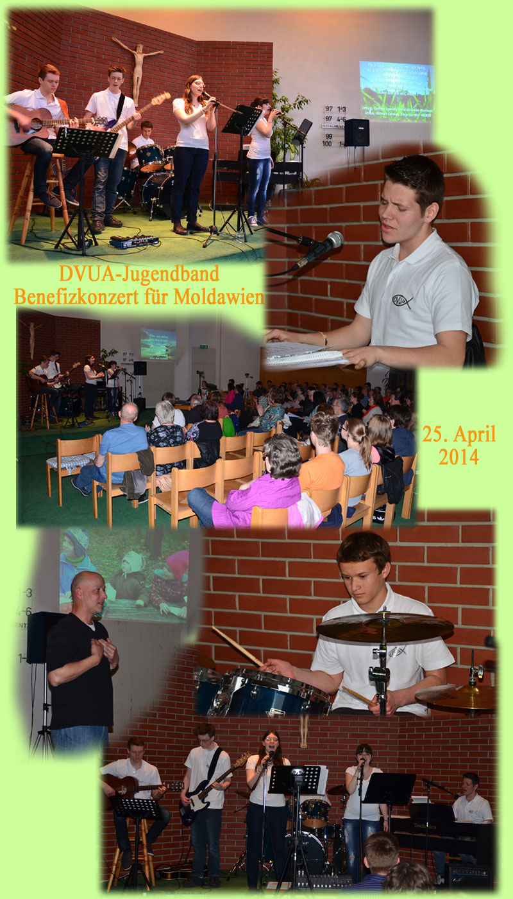
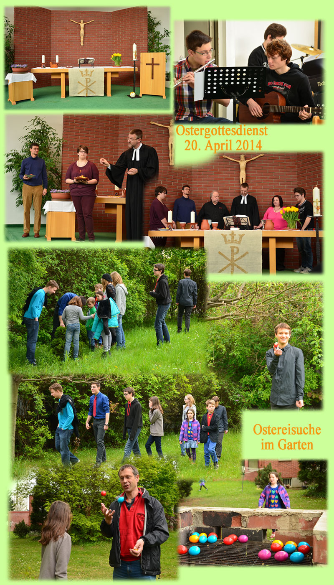

Rückblicke
-
Anfang
Benefizkonzert: DVUA-Jugendband: 25. April 2014
Stimmungsvolles christliches Popkonzert der Jugendband.
Für das Kinderheim in Moldawien konnte eine stolze Summe gesammelt werden. -
Anfang
Ostergottesdienst mit Rhygoband: 20. April 2014
Die Rhygo-Band begleitete den abwechslungsreichen Ostergottesdienst.
Anschließend konnten Kinder und Jungebliebene im Garten die wirklich schwer versteckten Ostereier suchen und viele Eier waren bereits von den Tieren des Gartens gefunden worden.